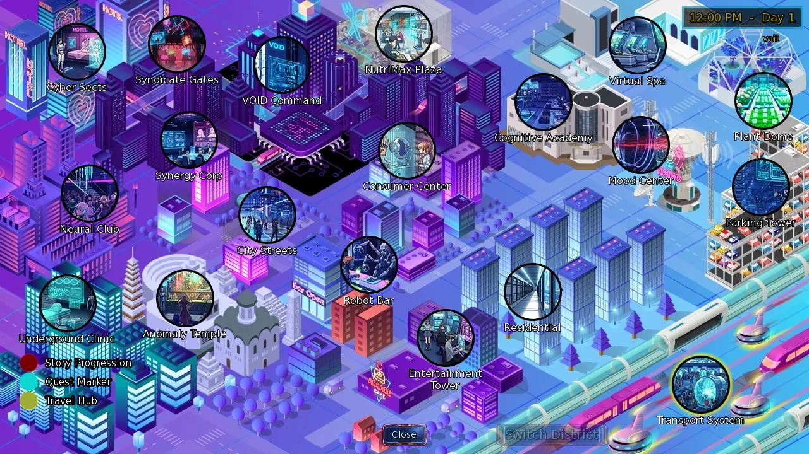

Select a screenshot to enlarge it. Screens show example inventories and progress.
Start at Future → Prime Sector map → Syndicate Gates. Follow the shared missions, then choose personal routes or the alliance side quest. This guide lists destinations, order and unlocks without retelling scene outcomes. It covers the complete released v1.0 Beta x.
Your first circuit
The Syndicate is built into the game. Shared story events normally start automatically on entering their exact location once their conditions are met. Finish the scene, leave and re-enter to check another. Opening a portrait is not the same as completing its introduction plot.
A convenient first circuit is Gates → Den → Parlor → Motley’s Lair → Parlor → Big Top → Fortune Teller’s Booth → Gates → Funhouse → Gates → Garden → Gates. Re-enter the Gates for The Gatekeeper if a different scene took priority.
Check Communications for your current objective. The shared route does not require everyone’s romance route. Its main extra gates are 07:00–17:00 for Taming the Rookie and later core Rogue 50 / 55. The alliance separately requires Story Beat 85.

Locations and portraits
Travel between the eight Syndicate locations costs zero in-game minutes. Talk, training, dates and H2Hs retain their own costs. Portrait schedules affect portrait interactions; they do not add an unlisted hour gate to shared automatic plots.
| Location | Direct connections | Portrait / activity |
|---|---|---|
| Syndicate Gates | Big Top, Den, Booth, Funhouse, Garden | Bayne · all day |
| The Big Top | Gates, Parlor, Funhouse, Booth | Kitty · all day |
| The Den | Gates, Parlor | Timed automatic scenes |
| Fortune Teller’s Booth | Gates, Big Top | Zodiac · all day |
| The Funhouse | Gates, Big Top | Chamel 00–09 / 15–24; Chamella 09–15 |
| The Garden | Gates | Poison · all day |
| The Parlor | Den, Big Top, Motley’s Lair | Shared missions / alliance |
| Motley’s Lair | Parlor | Motley · all day |
Windows include the start and exclude the end: the Funhouse switches to Chamella at 09:00 and back to Chamel at 15:00. Their relationship totals are separate.
Eight introductions
| Event | Destination | All requirements |
|---|---|---|
| The Gates of Chaos | Syndicate Gates | First visit; no earlier Syndicate plot required |
| The New Variable | The Parlor | First visit; no earlier Syndicate plot required |
| The Gatekeeper | Syndicate Gates | The Gates of Chaos |
| Fresh Meat | The Big Top | First visit; no earlier Syndicate plot required |
| Send in the Clown | The Funhouse | The New Variable |
| The Foretold Meeting | Fortune Teller’s Booth | First visit; no earlier Syndicate plot required |
| Street Knowledge | The Garden | The Gates of Chaos |
| Welcome to the Circus | Motley’s Lair | First visit; no earlier Syndicate plot required |
Shared mission route
Part one: show all destinations and prerequisites
| Event | Destination | All requirements |
|---|---|---|
| Collecting Dues | Fortune Teller’s Booth | The Foretold Meeting；Fresh Meat；Send in the Clown；The Gatekeeper |
| Collecting Dues - The Bar | Robot Bar | Collecting Dues |
| Cat's Eyes | The Big Top | Collecting Dues - The Bar |
| New Blood | Fortune Teller’s Booth | Collecting Dues - The Bar |
| Faces | The Funhouse | Collecting Dues - The Bar |
| Taming the Rookie | Prime Transportation Nexus Hub | New Blood；07:00–17:00 |
| The Boss Takes Notice | Motley’s Lair | Taming the Rookie；Welcome to the Circus |
| Lines on the Board | The Parlor | Cat's Eyes；Street Knowledge；The Boss Takes Notice |
After Collecting Dues - The Bar, complete Cat’s Eyes, New Blood and Faces. New Blood leads through Taming the Rookie to The Boss Takes Notice. Lines on the Board needs Cat’s Eyes + Street Knowledge + The Boss Takes Notice. Faces is required later, so finish it on the same circuit.
Taming the Rookie uses Prime Transportation Nexus Hub, outside the circus, at 07:00–16:59. Cat’s Eyes and Taming the Rookie each grant a one-time +1 permanent Rogue.
Part two: show the operation route
| Event | Destination | All requirements |
|---|---|---|
| Open Doors | Fortune Teller’s Booth | Lines on the Board；Core Rogue 50+ |
| Invisible | Synergy Corp Corporate Tower | Open Doors |
| The Honeypot | Motley’s Lair | Invisible；Core Rogue 55+ |
| No Plan Survives | The Parlor | The Honeypot；Faces |
| The Abandoned Room | The Funhouse | No Plan Survives |
| The Bug | Synergy Corp Corporate Tower | No Plan Survives |
| The Performance | The Funhouse | The Abandoned Room；The Bug |
| The Punchline | The Funhouse | The Performance |
Both Rogue gates check the core value before equipment bonuses. After No Plan Survives, finish The Abandoned Room at the Funhouse and The Bug at Synergy Corp Corporate Tower. Return to the Funhouse for The Performance, then re-enter for The Punchline. Chamella’s daytime portrait shift is not an extra gate for these shared plots.
Part three: show the last four shared steps
| Event | Destination | All requirements |
|---|---|---|
| The Weight of a Secret | The Parlor | The Punchline |
| Badge and Bluster | Syndicate Gates | The Weight of a Secret |
| The Second Knock | Syndicate Gates | The Weight of a Secret；Badge and Bluster |
| After the Line | Syndicate Gates | The Second Knock |
After The Weight of a Secret, the Gates host three successive events: re-enter after each. After the Line completes this shared sequence; personal routes and the alliance are separate progress. Main Story Beat 76 needs The Bug, not completion of the alliance.
Syndicate Alliance side quest
Complete both Story Beat 85 and After the Line, then enter the Resistance Fortress Operations Center for Room for Reinforcements. Communications shows the alliance’s next destination until all seven events are complete. This side quest does not advance the numbered story cursor.
Show the seven-event alliance route
| Event | Destination | All requirements |
|---|---|---|
| Room for Reinforcements | Operations Center — Resistance Fortress | Story Beat 85；After the Line |
| Not for Free | The Parlor | Room for Reinforcements |
| The Third Knock | Syndicate Gates | Not for Free |
| The Long Way Out | The Funhouse | The Third Knock |
| Terms of Command | The Parlor | The Long Way Out |
| What She Built | Motley’s Lair | Terms of Command |
| Our War | The Parlor | What She Built |
There are no additional affection-stage or hour gates on these seven events. Caring, Funny and Flirty choices all lead onward, with different dialogue and relationship rewards. Motley’s The Truth changes a passage in What She Built; it is not an alliance prerequisite.
Show base alliance relationship rewards and choice rewards
These are reward inputs, not guaranteed final point totals. Normal relationship bonuses and randomized ranges can alter the actual awards.
| Event | Completion base | Choice reward base |
|---|---|---|
| Room for Reinforcements | Ghost +5, AIMy +3, Kitty +3 | Caring: Ghost +3 / Funny: AIMy +3 / Flirty: Ghost +2 |
| Not for Free | Motley +7, Zodiac +3 | Caring: Motley +3, Zodiac +1 / Funny: Zodiac +2, Motley +2 / Flirty: Motley +2 |
| The Third Knock | Motley +6, Bayne +4, Poison +4, Kitty +2 | Caring: Motley +3, Bayne +2 / Funny: Poison +3 / Flirty: Motley +2 |
| The Long Way Out | Motley +5, Zodiac +4, Chamel +5, Kitty +3, Poison +3, Bayne +2 | Caring: Chamel +3 / Funny: Zodiac +2, Motley +1 / Flirty: Motley +3 |
| Terms of Command | Motley +7, Ghost +7 | Caring: Ghost +3, Motley +3 / Funny: Motley +2, Ghost +1 / Flirty: Motley +2 |
| What She Built | Motley +10 | Caring: Motley +3 / Funny: Motley +2 / Flirty: Motley +3 |
| Our War | Motley +10, Ghost +5, Kitty +5, Zodiac +5, Chamel +5, Poison +5, Bayne +5 | Caring: Motley +3 / Funny: Kitty +2, Poison +2 / Flirty: Motley +2 |
Completing Our War during normal play recruits six TD heroes: Motley, Kitty, Bayne, Zodiac, Chamel and Poison. Chamella is not a seventh recruit. Affection, H2Hs and EXTRAS replay do not substitute for live completion.
Defend the Syndicate Gates appears at the Gates after Beat 85 and Our War. Its campaign has 25 waves including the District Reclaimer; clearing it unlocks that battlefield’s Infinite Mode. Earned battle EXP survives defeat. Use Tower Defense for deployment, training, equipment and supply preparation.
After the alliance, Motley offers the separate A Place to Return H2H at her Lair: Friend+, Our War complete, base 60 minutes / 10 Energy. Her romantic H2H chain is not required.
Affection and Rogue preparation
Ordinary Talk requires Acquaintance with that individual: normally 50 points. It takes 15 minutes, has a 1-point base award and a safe limit of five per character per day. Going over can annoy the character and lose affection. Use introductions, shared missions and Known-stage Den scenes to build initial progress.
At Kitty Acquaintance+, select Rogue Training from her Big Top portrait. A successful lesson costs a base $150, 60 minutes and 20 Energy and grants +1 core Rogue and 3 base Kitty affection, with a safe limit of three per day. Over-limit attempts do not continue the same training reward.
Show normal relationship thresholds
| Stage | Points |
|---|---|
| Known | 25 |
| Acquaintance | 50 |
| Friend | 100 |
| Close Friend | 200 |
| Crush | 400 |
| Romantic | 800 |
| Intimate | 1600 |
| In Love | 3000 |
Optional personal routes
These routes are separate from shared missions and alliance recruitment. Meet every listed condition. Friend scenes generally do not require the corresponding Den scene, while Close Friend scenes require their Friend predecessor. Later titles are navigation labels; their revelations are left to the game.
Show six Known-stage Den scenes
| Event | Destination | All requirements |
|---|---|---|
| Cat's Out of the Bag | The Den | Kitty: Known+；00:00–06:00 |
| The Interview | The Den | Motley: Known+；06:00–09:00 |
| Downtime | The Den | Bayne: Known+；09:00–12:00 |
| Something Green | The Den | Poison: Known+；12:00–18:00 |
| What the Cards Don't Show | The Den | Zodiac: Known+；18:00–00:00 |
| Reflections | The Den | Chamel: Known+；18:00–00:00 |
Zodiac and Chamel share 18:00–24:00. Re-enter the Den after the first to trigger the other.
Show Friend and Close Friend milestones
| Event | Destination | All requirements |
|---|---|---|
| Kitten's Got Claws | The Big Top | Kitty: Friend+ |
| Dead Ends | Fortune Teller’s Booth | Zodiac: Friend+ |
| Curtain Call | The Funhouse | Chamel: Friend+ |
| Green Thumb | The Garden | Poison: Friend+ |
| The Observation | Motley’s Lair | Motley: Friend+ |
| The Post | Syndicate Gates | Fresh Meat；The Foretold Meeting；Bayne: Friend+ |
| The Ninth Life | The Big Top | Kitten's Got Claws；Kitty: Close Friend+ |
| Cards on the Table | Fortune Teller’s Booth | Dead Ends；Zodiac: Close Friend+ |
| The Mirror | The Funhouse | Curtain Call；Chamel: Close Friend+ |
| Roots | The Garden | Green Thumb；Poison: Close Friend+ |
| The Tell | Motley’s Lair | The Observation；Motley: Close Friend+ |
| Standing Watch | Syndicate Gates | The Post；Bayne: Close Friend+ |
Later personal route opt-in: show titles and cross-character prerequisites
| Event | Destination | All requirements |
|---|---|---|
| The Necessary Evil | Fortune Teller’s Booth | The Honeypot；Zodiac: Close Friend+ |
| The Confession | Fortune Teller’s Booth | The Necessary Evil；Zodiac: Crush+ |
| The Game | Motley’s Lair | The Honeypot；The Confession |
| The Reckoning | Motley’s Lair | The Confession；The Game；Motley: Friend+ |
| Behind the Curtain | Fortune Teller’s Booth | The Reckoning |
| The Summons | Motley’s Lair | The Tell；Behind the Curtain；Motley: Crush+ |
| The Fascination | The Den | The Summons；Motley: Crush+ |
| The Dissection | Motley’s Lair | The Fascination；Motley: Romantic+ |
| The Truth | Motley’s Lair | The Dissection；Motley: Romantic+ |
| The Push Back | The Big Top | The Ninth Life；Kitty: Crush+ |
| The Invitation | The Big Top | The Push Back；Kitty: Romantic+ |
| Tamed | The Big Top | The Invitation；Kitty: Intimate+ |
| The Test | The Garden | Roots；Fresh Meat；Send in the Clown；Poison: Crush+ |
| Proving Ground | The Garden | The Test；Poison: Romantic+ |
| The Real Poison | The Garden | Proving Ground；Poison: Intimate+ |
| The Real Thing | The Big Top | The Mirror；The Punchline；Chamel: Intimate+ |
| The Vigil | Syndicate Gates | Standing Watch；Bayne: Crush+ |
| The Order | Motley’s Lair | The Vigil；The Truth；Tamed；The Test；The Real Thing；Bayne: Intimate+；Motley: Romantic+ |
| Mirror Duty | The Funhouse | Faces；09:00–15:00 |
For Motley, follow Zodiac’s The Necessary Evil → The Confession, then The Game → The Reckoning → Behind the Curtain. The Order needs Poison’s The Test, not The Real Poison. Chamel’s The Real Thing occurs at The Big Top, not her normal Funhouse portrait. Chamella’s Mirror Duty needs Faces and 09:00–15:00.
H2Hs and other portrait actions
Show ten H2Hs and their base costs
| Character | H2H | Requirements | Minutes / Energy |
|---|---|---|---|
| Chamel | Clown Time | Friend+ | 30 / 15 |
| Chamel | Broken Carousel | Close Friend+ | 45 / 20 |
| Poison | Patch Job | Friend+ | 60 / 10 |
| Poison | No Armor | Crush+ | 75 / 15 |
| Zodiac | A Fair Game | Friend+ | 60 / 10 |
| Zodiac | Closer | Crush+ | 75 / 15 |
| Motley | No Audience | Friend+ | 60 / 10 |
| Motley | One Honest Minute | Close Friend+; No Audience H2H | 60 / 10 |
| Motley | The Last Inch | Romantic+; One Honest Minute H2H; The Truth | 90 / 20 |
| Motley | A Place to Return | Friend+; Our War | 60 / 10 |
Select H2Hs from the portrait menu; entering a room does not complete one. Poison’s and Zodiac’s Crush H2Hs do not require their Friend H2Hs. Kitty separately offers the one-time On the Prowl date at Crush+, 18:00–22:00, from her Big Top portrait: base $80, 120 minutes and 30 Energy.
Show repeatable private-action point gates
Kitty Style, Prove Yourself, Intimate with Zodiac and Stay a While require 1,000 points with their respective characters. The Garden After Dark and Intimate with Zodiac II require 1,500. Each costs a base 30 minutes / 20 Energy, once per action per day. Romantic starts at 800, so that stage alone does not satisfy a 1,000-point gate.
A visit after the main story
Post-story opt-in: show the entry requirement
After completing Story Beat 100, enter The Den for a new one-time automatic event. This visit does not require the alliance, a personal romance route, an affection stage or a narrower hour window. It is a separate post-story visit, not Beat 101.
Common blockers
| Problem | What to check |
|---|---|
| No shared event starts | Check the exact room, every preceding event and whether this one-time scene is already complete; re-enter after another scene. |
| Open Doors / Honeypot missing | Core Rogue 50 / 55, not the equipment-adjusted total. |
| Alliance missing | Both Beat 85 and After the Line; start at Operations Center, not the Gates. |
| Heroes still locked | Complete Our War during normal play; EXTRAS replay does not recruit. |
| Portrait or Talk unavailable | Check Funhouse shifts and the individual’s Acquaintance gate; separate Chamel / Chamella totals. |
The completion route covers 8 introductions, 20 later shared missions, 7 alliance events, 6 Den scenes, 12 Friend/Close Friend events, 19 later personal events and one post-story visit: 73 one-time automatic events. H2Hs, Kitty’s date, lessons and repeatable actions are separate. Completing the shared story does not automatically complete the other routes.
从未来／核心区地图 → 辛迪加大门开始。先完成共同任务，再按自己的目标推进个人路线或联盟支线。本页列出地点、顺序与解锁条件，不复述剧情结局。内容适用于完整发行版v1.0 Beta x。
先走一圈
当前辛迪加内容已内置，无需另装模组。共同剧情通常在符合条件后进入指定地点时自动开始。完成一场后，离开并重新进入，检查下一场。只打开角色头像不等于完成其登场事件。
可按这条路线完成初次拜访：大门 → 巢穴 → 会客厅 → Motley的巢穴 → 会客厅 → 大帐篷 → 占卜摊位 → 大门 → 欢乐屋 → 大门 → 花园 → 大门。若大门先触发了另一场剧情，再进出一次，补完「守门人」。
先查看通讯中的当前目标。共同任务初期不要求完成所有人的恋爱路线；主要额外门槛是「驯服菜鸟」的07:00–17:00，以及后续的基础盗贼属性50／55。联盟另有第85段主线门槛。
地点与角色头像
辛迪加内部八处地点之间移动不消耗游戏时间。交谈、训练、约会和谈心仍按各自费用结算。头像出现的时段影响头像互动；共同自动剧情只有明确列出的时间条件，不需要额外套用头像排班。
| 地点 | 直接相连地点 | 常驻头像／活动 |
|---|---|---|
| 辛迪加大门 | 大帐篷、巢穴、占卜摊位、欢乐屋、花园 | Bayne · 全天 |
| 大帐篷 | 大门、会客厅、欢乐屋、占卜摊位 | Kitty · 全天 |
| 巢穴 | 大门、会客厅 | 按时段触发的自动剧情 |
| 占卜摊位 | 大门、大帐篷 | Zodiac · 全天 |
| 欢乐屋 | 大门、大帐篷 | Chamel 00–09／15–24；Chamella 09–15 |
| 花园 | 大门 | Poison · 全天 |
| 会客厅 | 巢穴、大帐篷、Motley的巢穴 | 共同任务／联盟会面 |
| Motley的巢穴 | 会客厅 | Motley · 全天 |
时间包含起点、不包含终点：09:00切换为Chamella，15:00切回Chamel。两人的关系点数独立。
八场登场事件
| 事件 | 地点 | 全部前置条件 |
|---|---|---|
| 混沌之门 (The Gates of Chaos) | 辛迪加大门 | 首次进入；无此前辛迪加事件要求 |
| 新变量 (The New Variable) | 会客厅 | 首次进入；无此前辛迪加事件要求 |
| 守门人 (The Gatekeeper) | 辛迪加大门 | 混沌之门 (The Gates of Chaos) |
| 新鲜血液 (Fresh Meat) | 大帐篷 | 首次进入；无此前辛迪加事件要求 |
| 小丑登场 (Send in the Clown) | 欢乐屋 | 新变量 (The New Variable) |
| 预言中的相遇 (The Foretold Meeting) | 占卜摊位 | 首次进入；无此前辛迪加事件要求 |
| 街头情报 (Street Knowledge) | 花园 | 混沌之门 (The Gates of Chaos) |
| 欢迎来到马戏团 (Welcome to the Circus) | Motley的巢穴 | 首次进入；无此前辛迪加事件要求 |
共同任务路线
第一组：展开地点与全部条件
| 事件 | 地点 | 全部前置条件 |
|---|---|---|
| 收取保护费 (Collecting Dues) | 占卜摊位 | 预言中的相遇 (The Foretold Meeting)；新鲜血液 (Fresh Meat)；小丑登场 (Send in the Clown)；守门人 (The Gatekeeper) |
| 收取保护费 - 酒吧 (Collecting Dues - The Bar) | 机器人酒吧 | 收取保护费 (Collecting Dues) |
| 猫眼 (Cat's Eyes) | 大帐篷 | 收取保护费 - 酒吧 (Collecting Dues - The Bar) |
| 新血 (New Blood) | 占卜摊位 | 收取保护费 - 酒吧 (Collecting Dues - The Bar) |
| 千面 (Faces) | 欢乐屋 | 收取保护费 - 酒吧 (Collecting Dues - The Bar) |
| 驯服菜鸟 (Taming the Rookie) | 核心区交通枢纽 | 新血 (New Blood)；07:00–17:00 |
| 老大注意到了你 (The Boss Takes Notice) | Motley的巢穴 | 驯服菜鸟 (Taming the Rookie)；欢迎来到马戏团 (Welcome to the Circus) |
| 板上的线索 (Lines on the Board) | 会客厅 | 猫眼 (Cat's Eyes)；街头情报 (Street Knowledge)；老大注意到了你 (The Boss Takes Notice) |
「收取保护费－酒吧」之后可分别完成「猫眼」「新血」「千面」。「新血」通向「驯服菜鸟」及「老大注意到了你」；「板上的线索」则要求「猫眼＋街头情报＋老大注意到了你」。「千面」也是后续必要条件，建议同一轮完成。
「驯服菜鸟」在马戏团之外的核心区交通枢纽触发，时间为07:00–16:59。完成「猫眼」和「驯服菜鸟」各获得一次永久盗贼属性＋1。
第二组：展开侦察与行动路线
| 事件 | 地点 | 全部前置条件 |
|---|---|---|
| 敞开大门 (Open Doors) | 占卜摊位 | 板上的线索 (Lines on the Board)；基础盗贼属性50+ |
| 隐形 (Invisible) | 新能集公司企业塔 | 敞开大门 (Open Doors) |
| 美人计 (The Honeypot) | Motley的巢穴 | 隐形 (Invisible)；基础盗贼属性55+ |
| 计划终成泡影 (No Plan Survives) | 会客厅 | 美人计 (The Honeypot)；千面 (Faces) |
| 废弃房间 (The Abandoned Room) | 欢乐屋 | 计划终成泡影 (No Plan Survives) |
| 窃听器 (The Bug) | 新能集公司企业塔 | 计划终成泡影 (No Plan Survives) |
| 表演 (The Performance) | 欢乐屋 | 废弃房间 (The Abandoned Room)；窃听器 (The Bug) |
| 包袱 (The Punchline) | 欢乐屋 | 表演 (The Performance) |
两个盗贼门槛检查基础值，不计装备加成。「计划终成泡影」之后，分别在欢乐屋完成「废弃房间」、在新能集公司企业塔完成「窃听器」，再回欢乐屋完成「表演」，重新进入后完成「包袱」。这些共同事件不受Chamella头像的白天排班限制。
第三组：展开共同任务最后四步
| 事件 | 地点 | 全部前置条件 |
|---|---|---|
| 秘密的重量 (The Weight of a Secret) | 会客厅 | 包袱 (The Punchline) |
| 徽章与虚张声势 (Badge and Bluster) | 辛迪加大门 | 秘密的重量 (The Weight of a Secret) |
| 第二次敲门 (The Second Knock) | 辛迪加大门 | 秘密的重量 (The Weight of a Secret)；徽章与虚张声势 (Badge and Bluster) |
| 防线之后 (After the Line) | 辛迪加大门 | 第二次敲门 (The Second Knock) |
「秘密的重量」之后，大门连续承接三场剧情。每场结束后重新进入。「防线之后」完成共同任务的这一部分；它与个人路线、联盟是不同进度。主线第76段只需要推进到「窃听器」，不要求先完成联盟。
辛迪加联盟支线
完成主线第85段和「防线之后」，再进入反抗军堡垒的作战中心，开始「为援军留个位置」。两个条件缺一不可。通讯中的「辛迪加联盟」会提示下一处目的地；七场事件结束后，该支线提示消失。它不会替代或推进主线编号。
展开联盟七步路线
| 事件 | 地点 | 全部前置条件 |
|---|---|---|
| 为援军留个位置 (Room for Reinforcements) | 作战中心 · 反抗军堡垒 | 主线第85段；防线之后 (After the Line) |
| 不是白帮忙 (Not for Free) | 会客厅 | 为援军留个位置 (Room for Reinforcements) |
| 第三次敲门 (The Third Knock) | 辛迪加大门 | 不是白帮忙 (Not for Free) |
| 绕远路脱身 (The Long Way Out) | 欢乐屋 | 第三次敲门 (The Third Knock) |
| 指挥的条件 (Terms of Command) | 会客厅 | 绕远路脱身 (The Long Way Out) |
| 她亲手建立的 (What She Built) | Motley的巢穴 | 指挥的条件 (Terms of Command) |
| 我们的战争 (Our War) | 会客厅 | 她亲手建立的 (What She Built) |
七步路线没有额外的关系阶段或时间门槛。关心、幽默、调情三类回答都能继续推进；不同回答改变对话和关系奖励。Motley的「真相」只改变「她亲手建立的」中的一段对话，不是联盟前置条件。
展开联盟关系奖励基数与选项奖励
下表是奖励基数，不是承诺每次获得的最终点数；普通关系加成和随机范围仍可能改变实际结果。
| 事件 | 完成奖励基数 | 选项奖励基数 |
|---|---|---|
| 为援军留个位置 (Room for Reinforcements) | Ghost +5, AIMy +3, Kitty +3 | 关心： Ghost +3 / 幽默： AIMy +3 / 调情： Ghost +2 |
| 不是白帮忙 (Not for Free) | Motley +7, Zodiac +3 | 关心： Motley +3, Zodiac +1 / 幽默： Zodiac +2, Motley +2 / 调情： Motley +2 |
| 第三次敲门 (The Third Knock) | Motley +6, Bayne +4, Poison +4, Kitty +2 | 关心： Motley +3, Bayne +2 / 幽默： Poison +3 / 调情： Motley +2 |
| 绕远路脱身 (The Long Way Out) | Motley +5, Zodiac +4, Chamel +5, Kitty +3, Poison +3, Bayne +2 | 关心： Chamel +3 / 幽默： Zodiac +2, Motley +1 / 调情： Motley +3 |
| 指挥的条件 (Terms of Command) | Motley +7, Ghost +7 | 关心： Ghost +3, Motley +3 / 幽默： Motley +2, Ghost +1 / 调情： Motley +2 |
| 她亲手建立的 (What She Built) | Motley +10 | 关心： Motley +3 / 幽默： Motley +2 / 调情： Motley +3 |
| 我们的战争 (Our War) | Motley +10, Ghost +5, Kitty +5, Zodiac +5, Chamel +5, Poison +5, Bayne +5 | 关心： Motley +3 / 幽默： Kitty +2, Poison +2 / 调情： Motley +2 |
在正常游玩中完成「我们的战争」后，Motley、Kitty、Bayne、Zodiac、Chamel、Poison共六名角色加入塔防军队。Chamella没有作为第七名角色单独加入。好感、谈心和EXTRAS回放都不能代替这项完成条件。
主线第85段和「我们的战争」都完成后，辛迪加大门出现「保卫辛迪加大门」。战役共25波，包含辖区清剿者；完整通关后解锁该战场的无限模式，失败也保留已获得的战斗经验。联盟提供招募和战场入口，角色仍需按塔防指南准备部署、训练、装备与补给。
联盟后，Motley在自己的巢穴提供独立谈心「能够回来的地方」：要求「朋友」以上、「我们的战争」完成，基础消耗60分钟／10精力，不要求完成她的恋爱谈心链。
关系与盗贼属性准备
普通交谈通常要求与该角色达到「相识」：50点，每次15分钟、关系奖励基数1，每人每天安全上限5次。超出后可能出现不耐烦回应并扣除关系。先利用登场事件、共同任务和「已知」阶段的巢穴事件取得最初进度。
Kitty达到「相识」后，从大帐篷的头像选单选择「游荡者训练」（Rogue Training，提升盗贼属性）。成功课程每次基础消耗$150、60分钟、20精力，获得基础盗贼＋1、Kitty关系奖励基数3；每天安全上限3次，超出后不会继续获得相同训练收益。
展开常用关系门槛
| 阶段 | 关系点数 |
|---|---|
| 已知 | 25 |
| 相识 | 50 |
| 朋友 | 100 |
| 亲密朋友 | 200 |
| 迷恋 | 400 |
| 浪漫感 | 800 |
| 亲密 | 1600 |
| 恋爱中 | 3000 |
可选个人剧情
下面的路线独立于共同任务和联盟。表格中的前置条件需要全部满足；「朋友」事件通常不要求先看对应的巢穴事件，但「亲密朋友」事件需要先完成对应的「朋友」事件。后期名称只用于辨认进度，不讲述事件内容。
展开六场「已知」阶段巢穴事件
| 事件 | 地点 | 全部前置条件 |
|---|---|---|
| 秘密已泄露 (Cat's Out of the Bag) | 巢穴 | Kitty：已知+；00:00–06:00 |
| 访谈 (The Interview) | 巢穴 | Motley：已知+；06:00–09:00 |
| 休息时间 (Downtime) | 巢穴 | Bayne：已知+；09:00–12:00 |
| 一片绿色 (Something Green) | 巢穴 | Poison：已知+；12:00–18:00 |
| 牌面之外 (What the Cards Don't Show) | 巢穴 | Zodiac：已知+；18:00–00:00 |
| 倒影 (Reflections) | 巢穴 | Chamel：已知+；18:00–00:00 |
Zodiac和Chamel都在18:00–24:00触发；看完一场后进出巢穴，再触发另一场。
展开「朋友／亲密朋友」事件
| 事件 | 地点 | 全部前置条件 |
|---|---|---|
| 小猫也有利爪 (Kitten's Got Claws) | 大帐篷 | Kitty：朋友+ |
| 死路 (Dead Ends) | 占卜摊位 | Zodiac：朋友+ |
| 谢幕 (Curtain Call) | 欢乐屋 | Chamel：朋友+ |
| 园艺技巧 (Green Thumb) | 花园 | Poison：朋友+ |
| 观察 (The Observation) | Motley的巢穴 | Motley：朋友+ |
| 哨位 (The Post) | 辛迪加大门 | 新鲜血液 (Fresh Meat)；预言中的相遇 (The Foretold Meeting)；Bayne：朋友+ |
| 第九条命 (The Ninth Life) | 大帐篷 | 小猫也有利爪 (Kitten's Got Claws)；Kitty：亲密朋友+ |
| 摊牌 (Cards on the Table) | 占卜摊位 | 死路 (Dead Ends)；Zodiac：亲密朋友+ |
| 镜子 (The Mirror) | 欢乐屋 | 谢幕 (Curtain Call)；Chamel：亲密朋友+ |
| 根源 (Roots) | 花园 | 园艺技巧 (Green Thumb)；Poison：亲密朋友+ |
| 破绽 (The Tell) | Motley的巢穴 | 观察 (The Observation)；Motley：亲密朋友+ |
| 守夜 (Standing Watch) | 辛迪加大门 | 哨位 (The Post)；Bayne：亲密朋友+ |
后期个人路线：确认后展开名称与交叉前置
| 事件 | 地点 | 全部前置条件 |
|---|---|---|
| 必要之恶 (The Necessary Evil) | 占卜摊位 | 美人计 (The Honeypot)；Zodiac：亲密朋友+ |
| 告白 (The Confession) | 占卜摊位 | 必要之恶 (The Necessary Evil)；Zodiac：迷恋+ |
| 游戏 (The Game) | Motley的巢穴 | 美人计 (The Honeypot)；告白 (The Confession) |
| 清算 (The Reckoning) | Motley的巢穴 | 告白 (The Confession)；游戏 (The Game)；Motley：朋友+ |
| 帷幕后方 (Behind the Curtain) | 占卜摊位 | 清算 (The Reckoning) |
| 传唤 (The Summons) | Motley的巢穴 | 破绽 (The Tell)；帷幕后方 (Behind the Curtain)；Motley：迷恋+ |
| 迷恋 (The Fascination) | 巢穴 | 传唤 (The Summons)；Motley：迷恋+ |
| 剖析 (The Dissection) | Motley的巢穴 | 迷恋 (The Fascination)；Motley：浪漫感+ |
| 真相 (The Truth) | Motley的巢穴 | 剖析 (The Dissection)；Motley：浪漫感+ |
| 顶回去 (The Push Back) | 大帐篷 | 第九条命 (The Ninth Life)；Kitty：迷恋+ |
| 邀请 (The Invitation) | 大帐篷 | 顶回去 (The Push Back)；Kitty：浪漫感+ |
| 被驯服 (Tamed) | 大帐篷 | 邀请 (The Invitation)；Kitty：亲密+ |
| 测试 (The Test) | 花园 | 根源 (Roots)；新鲜血液 (Fresh Meat)；小丑登场 (Send in the Clown)；Poison：迷恋+ |
| 训练场 (Proving Ground) | 花园 | 测试 (The Test)；Poison：浪漫感+ |
| 真正的 Poison (The Real Poison) | 花园 | 训练场 (Proving Ground)；Poison：亲密+ |
| 真实的我 (The Real Thing) | 大帐篷 | 镜子 (The Mirror)；包袱 (The Punchline)；Chamel：亲密+ |
| 守夜 (The Vigil) | 辛迪加大门 | 守夜 (Standing Watch)；Bayne：迷恋+ |
| 命令 (The Order) | Motley的巢穴 | 守夜 (The Vigil)；真相 (The Truth)；被驯服 (Tamed)；测试 (The Test)；真实的我 (The Real Thing)；Bayne：亲密+；Motley：浪漫感+ |
| 镜子值勤 (Mirror Duty) | 欢乐屋 | 千面 (Faces)；09:00–15:00 |
Motley的后续路线先经过Zodiac的「必要之恶 → 告白」，再按「游戏 → 清算 → 帷幕后方」推进。「命令」要求Poison的「测试」，并不要求「真正的Poison」。Chamel的「真实的我」发生在大帐篷，而不是通常显示她头像的欢乐屋。Chamella的「镜子值勤」只要求「千面」完成及09:00–15:00。
谈心与其他头像行动
展开十段谈心的条件与基础费用
| 角色 | 谈心名称 | 条件 | 分钟／精力 |
|---|---|---|---|
| Chamel | 小丑时间 (Clown Time) | 朋友以上 | 30 / 15 |
| Chamel | 破败的旋转木马 (Broken Carousel) | 亲密朋友以上 | 45 / 20 |
| Poison | 应急包扎 (Patch Job) | 朋友以上 | 60 / 10 |
| Poison | 无护甲 (No Armor) | 迷恋以上 | 75 / 15 |
| Zodiac | 公平对局 (A Fair Game) | 朋友以上 | 60 / 10 |
| Zodiac | 更近一步 (Closer) | 迷恋以上 | 75 / 15 |
| Motley | 谢绝观众 (No Audience) | 朋友以上 | 60 / 10 |
| Motley | 坦诚的一分钟 (One Honest Minute) | 亲密朋友以上；谢绝观众谈心完成 | 60 / 10 |
| Motley | 最后一寸 (The Last Inch) | 浪漫感以上；坦诚的一分钟谈心及「真相」完成 | 90 / 20 |
| Motley | 能够回来的地方 (A Place to Return) | 朋友以上；我们的战争完成 | 60 / 10 |
谈心从角色头像手动选择，不会因为进入地点而自动完成。Poison、Zodiac的「迷恋」谈心不要求先完成各自的「朋友」谈心。Kitty另有一次性约会「夜游」：要求「迷恋」以上、18:00–22:00，从大帐篷头像开始，基础消耗$80、120分钟、30精力。
展开重复私密互动的点数门槛
「Kitty式」、「证明你的价值。」、「与 Zodiac 亲密相处」、「多待一会儿」分别要求对应角色1,000关系点；「暗夜花园」、「与 Zodiac 亲密相处 II」要求1,500点。每项基础消耗30分钟、20精力，每项每天一次。「浪漫感」从800点开始，因此达到该阶段不等于满足1,000点门槛。
主线通关后的来访
第100段后的可选内容：展开进入条件
完成主线第100段后，进入巢穴可触发一次新的自动事件。本次来访不要求先完成联盟、个人恋爱路线或某个关系阶段，也没有额外时段门槛。它是独立的通关后内容，不是第101段主线。
常见卡点
| 情况 | 检查项目 |
|---|---|
| 共同事件没有开始 | 检查准确地点、全部前置及是否已经完成；出现其他剧情后重新进入。 |
| 「敞开大门／美人计」未出现 | 要求基础盗贼50／55，装备加成不能补足。 |
| 联盟没有出现 | 主线第85段与「防线之后」都需完成；起点是作战中心，不是大门。 |
| 军队角色仍未解锁 | 正常游玩中完成我们的战争；EXTRAS回放不招募。 |
| 头像／交谈不可用 | 检查欢乐屋换班时间、该角色是否达到「相识」，以及Chamel／Chamella各自独立的点数。 |
完整整理包括：8场登场、20场后续共同任务、7场联盟、6场巢穴事件、12场朋友／亲密朋友事件、19场后期个人事件，以及第100段后的1场来访，共73场一次性自动事件。谈心、Kitty约会、训练和重复互动另计。完成共同任务不等于同时完成其余路线。
Adapted and updated from the community Chronoromancer Wiki. Community source and history · CC BY-SA 4.0. Game images © Chronoromancer Studio.